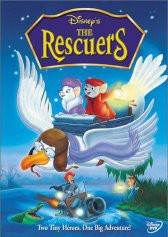

#2435 Bernard und Bianca - Die Mäusepolizei
Alternativ: Bernard und Bianca - Die Mäusepolizei (Englischer Titel)
Auszeichnungen: für 1 Oscars nominiert
 
 IMDB-Wertung: 6.9 / 10
IMDB-Wertung: 6.9 / 10  Metascore: 74
Metascore: 74 
Das Waisenmädchen Penny wurde von Madame Medusa entführt, weil sie in einer dunklen Höhle einen wertvollen Edelstein suchen soll. Per Flaschenpost schickt sie einen Hilferuf ab, der von Mäusen gefunden wird. Der Mäuserich Bernard und die Mäusedame Bianca machen sich auf dem Rücken eines Albatrosses auf die Reise, wobei ihr nicht nur die böse Madame Medusa im Weg stehen soll.
Jahr: 1977
Dauer: 78 Minuten
FSK: 0
Land: USA Studio: Buena Vista Distribution Co., Inc.Tonspuren: DTS - ,
Untertitel:
Auflösung: 1080p (1792x1080) Größe: 8120 MB
Genre: Abenteuer, Fantasy, Animation/Trick, Familie
Regisseur: John Lounsbery, Wolfgang Reitherman, Art Stevens
Drehbuch: Margery Sharp, Larry Clemmons, Ken Anderson, Frank Thomas, Vance Gerry
Soundtrack: Artie Butler
Darsteller:
Datei: X:\Kinder Disney HD\Bernard und Bianca\Bernard und Bianca - Die Mäusepolizei (1977, FSK0, 1792x1080).mkv seit 10.11.2015
Festplatte: Kinder-Filme+Trick
 Alle Filme aus Gruppe 'Kinder Disney HD\Bernard und Bianca'
Alle Filme aus Gruppe 'Kinder Disney HD\Bernard und Bianca'